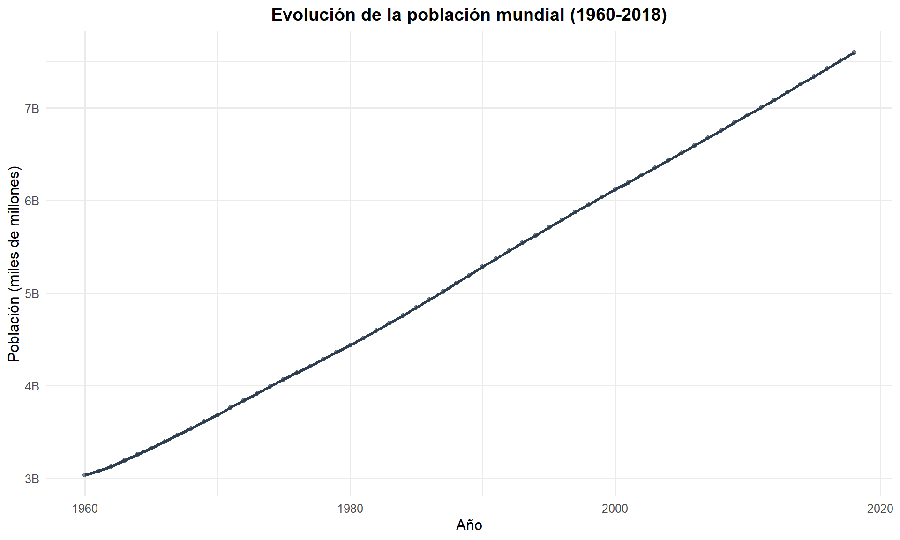
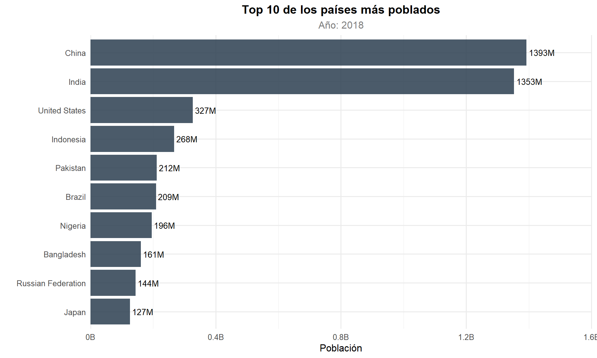
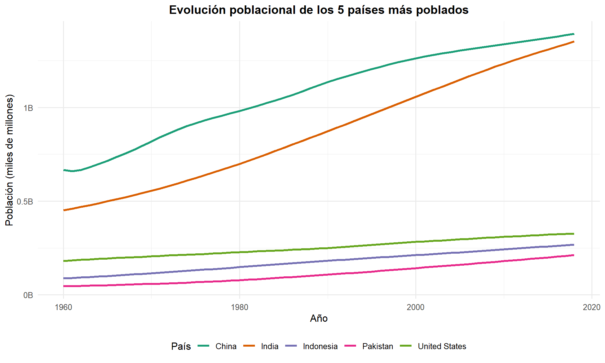

Capítulo 5 Evolución Temporal
5.1 Población Mundial Total
if (nrow(pop_mundial) > 0) {
ggplot(pop_mundial, aes(x = year, y = population)) +
geom_line(color = "#2C3E50", linewidth = 1.2) +
geom_point(color = "#E74C3C", size = 1.5, alpha = 0.6) +
scale_y_continuous(labels = function(x) paste0(round(x / 1e9, 2), "B")) +
labs(title = "Evolución de la Población Mundial (1960-2018)",
x = "Año", y = "Población (miles de millones)") +
theme_minimal(base_size = 12) +
theme(plot.title = element_text(face = "bold", hjust = 0.5))
}
Figure 5.1: Evolución de la población mundial de 1960 a 2018
La población mundial presenta una tendencia positiva entre1960 y 2018, pasando de aproximadamente 3 mil millones a más de 7.5 mil millones. La curva muestra un crecimiento prácticamente lineal en las últimas décadas, aunque la tasa de crecimiento porcentual ha ido disminuyendo progresivamente.
5.2 Top 10 Países Más Poblados
top10_reciente <- df_paises %>%
filter(year == max(year, na.rm = TRUE)) %>%
arrange(desc(population)) %>%
head(10)
kable(top10_reciente %>% select(country, year, population, pop_density, incomeLevel),
caption = "Top 10 países más poblados (año más reciente)")| country | year | population | pop_density | incomeLevel |
|---|---|---|---|---|
| China | 2018 | 1392730000 | 148.34883 | Upper middle income |
| India | 2018 | 1352617328 | 454.93807 | Lower middle income |
| United States | 2018 | 327167434 | 35.76609 | High income |
| Indonesia | 2018 | 267663435 | 147.75219 | Lower middle income |
| Pakistan | 2018 | 212215030 | 275.28932 | Lower middle income |
| Brazil | 2018 | 209469333 | 25.06172 | Upper middle income |
| Nigeria | 2018 | 195874740 | 215.06499 | Lower middle income |
| Bangladesh | 2018 | 161356039 | 1239.57931 | Lower middle income |
| Russian Federation | 2018 | 144478050 | 8.82208 | Upper middle income |
| Japan | 2018 | 126529100 | 347.07346 | High income |
Se identifica a China como el país con mayor población, seguido de India, ambos con más de 1350 millones de habitantes. Sin embargo, se puede apreciar que India presenta mayor densidad poblacional, lo cual puede significar una
ggplot(top10_reciente, aes(x = reorder(country, population), y = population)) +
geom_bar(stat = "identity", fill = "#1ABC9C", alpha = 0.85) +
geom_text(aes(label = paste0(round(population / 1e6, 0), "M")),
hjust = -0.1, size = 3.5) +
coord_flip() +
scale_y_continuous(labels = function(x) paste0(round(x / 1e9, 2), "B"),
expand = expansion(mult = c(0, 0.15))) +
labs(title = "Top 10 Países Más Poblados",
subtitle = paste("Año:", max(df_paises$year, na.rm = TRUE)),
x = "", y = "Población") +
theme_minimal(base_size = 12) +
theme(plot.title = element_text(face = "bold", hjust = 0.5),
plot.subtitle = element_text(hjust = 0.5, color = "grey50"))
Figure 5.2: Los 10 países con mayor población
5.3 Evolución de los Top 5 Países
top5_nombres <- top10_reciente$country[1:5]
top5_evolucion <- df_paises %>%
filter(country %in% top5_nombres) %>%
arrange(country, year)
ggplot(top5_evolucion, aes(x = year, y = population, color = country)) +
geom_line(linewidth = 1.1) +
scale_y_continuous(labels = function(x) paste0(round(x / 1e9, 2), "B")) +
scale_color_brewer(palette = "Dark2") +
labs(title = "Evolución Poblacional de los 5 Países Más Poblados",
x = "Año", y = "Población (miles de millones)", color = "País") +
theme_minimal(base_size = 12) +
theme(plot.title = element_text(face = "bold", hjust = 0.5),
legend.position = "bottom")
Figure 5.3: Evolución poblacional de los 5 países más poblados
China e India dominan ampliamente el panorama demográfico global, con poblaciones que superan los 1350 millones cada uno. Se observa que India ha mantenido una tasa de crecimiento más constante que China, cuyo crecimiento se desaceleró notablemente a partir de los años 80, coincidiendo con la implementación de la política del hijo único. Estados Unidos, Indonesia y Brasil completan el top 5, pero con poblaciones significativamente menores.